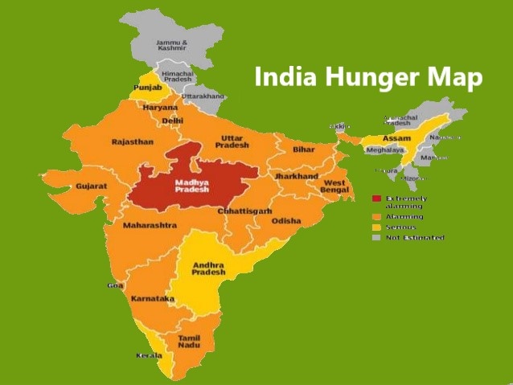
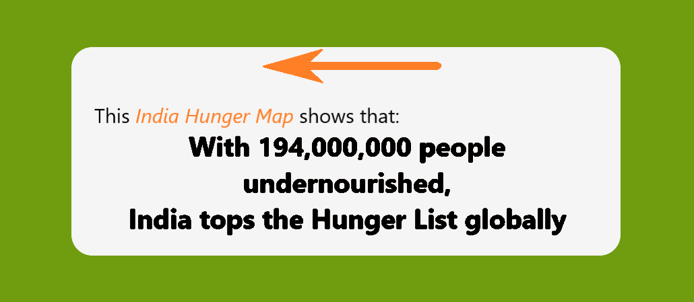
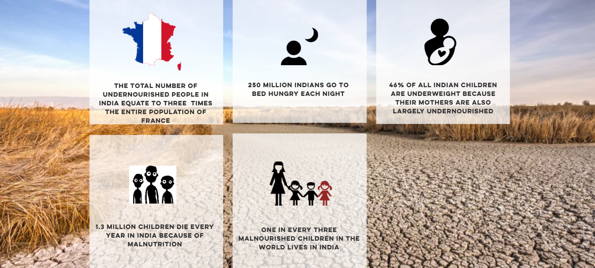

Your Leftover, Life to Poor
Hunger kills more people than Aids, Malaria and Tuberculosis combined



#truefacts
India is home to a quarter of the world’s undernourished people, but the situation is gradually improving and rates of hunger are dropping. Here are eight things to know.
- India is home to 194.6 million undernourished people. That’s three times the entire population of France.
- One fourth of all undernourished people on the planet live in India.
- The country is home to over one third of the world’s stunted (chronically malnourished) children. A 38.7 percent of children under 5 are stunted.
- Hunger has been dropping at a moderate rate since 1990.
- Yet progress in reducing stunting needs further improvement and still lags behind many poorer countries. If progress continues at the current rate, India will achieve the current stunting rate of Ghana only by 2030 and that of China by 2055.
- India’s economic growth has not been fully translated into higher food consumption, let alone better diets overall, suggesting that the poor and hungry may have failed to benefit much from overall growth.
- The rates of obesity and diabetes increased between 2010 and 2014. Today 9.5% of Indian adults are diagnosed with diabetes and 4.9% with obesity.
- Low social status affects women's health and nutrition and makes it more likely that they will give birth to underweight babies.
Source - http://www.wfp.org/stories/10-fact-about-food-and-nutrition-india